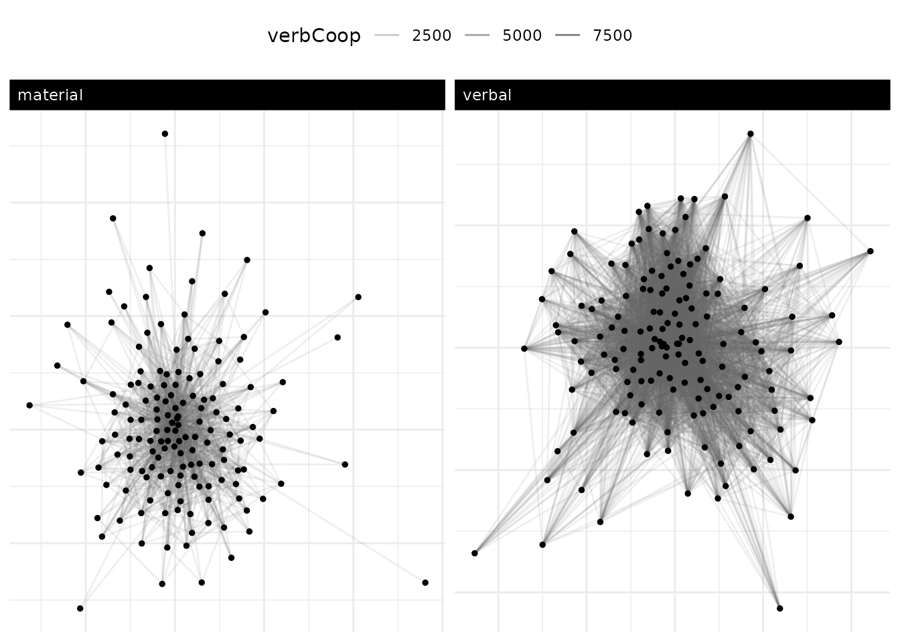
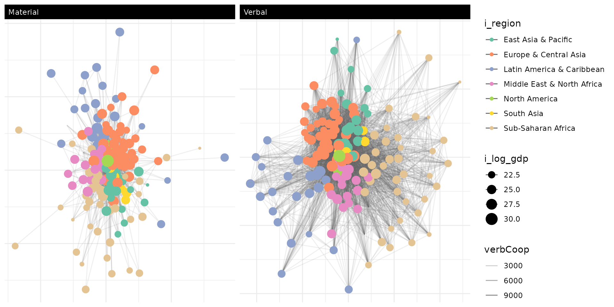
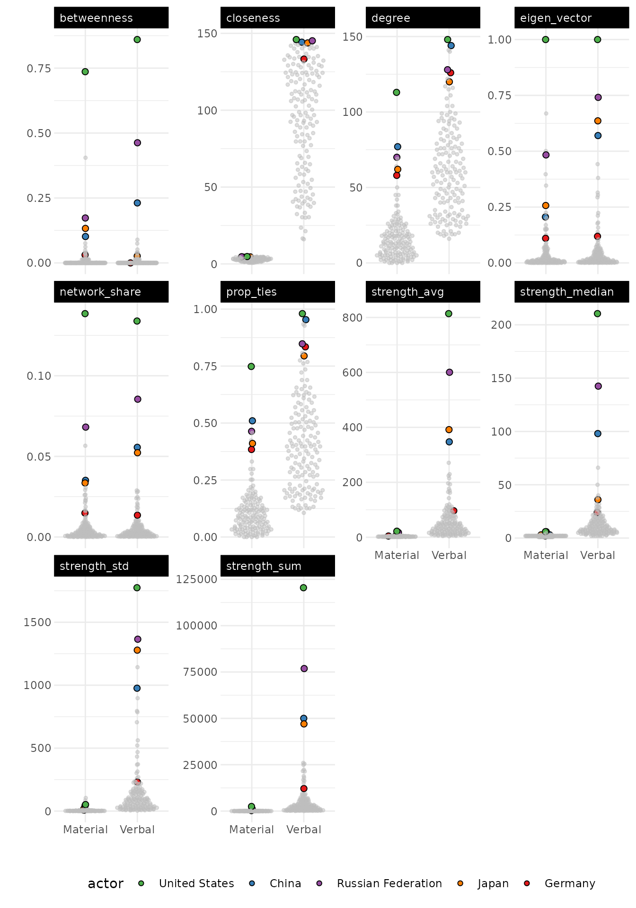
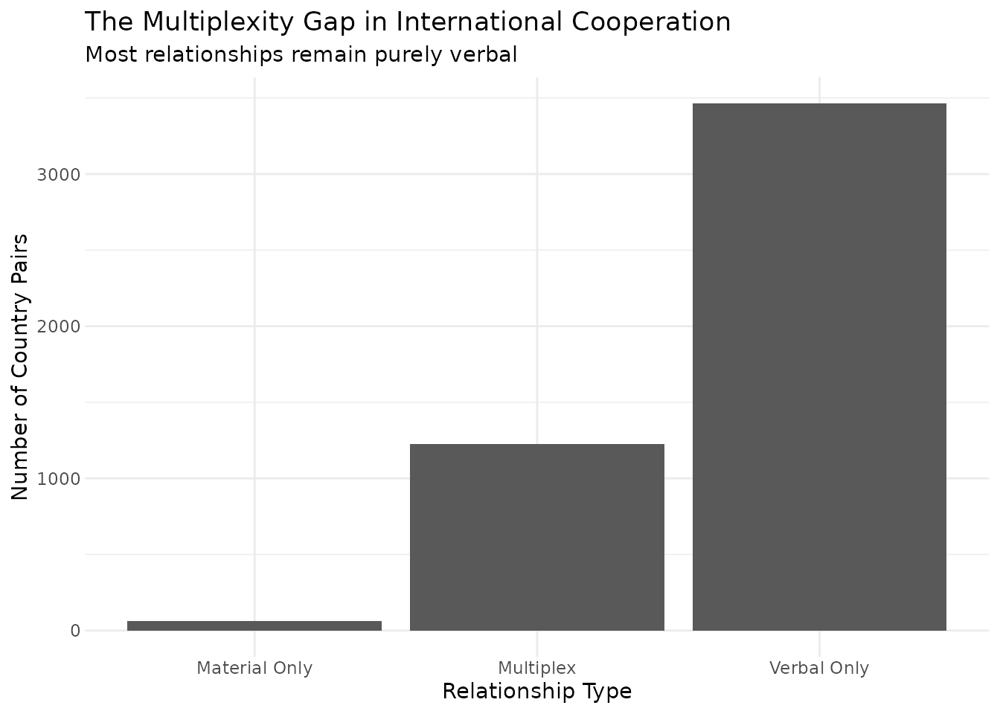
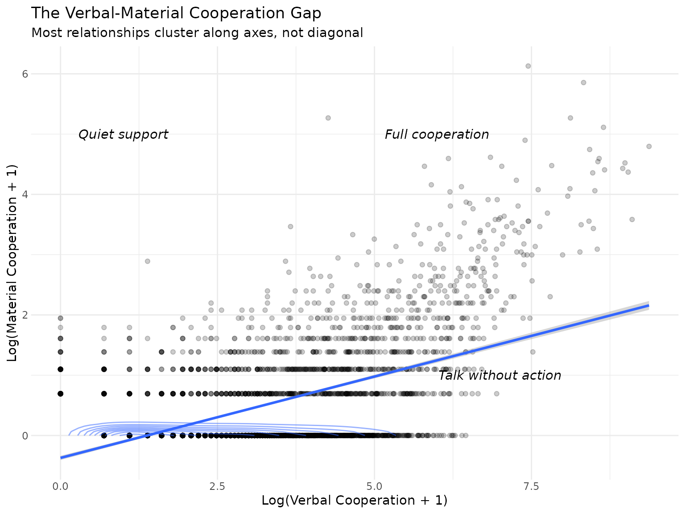
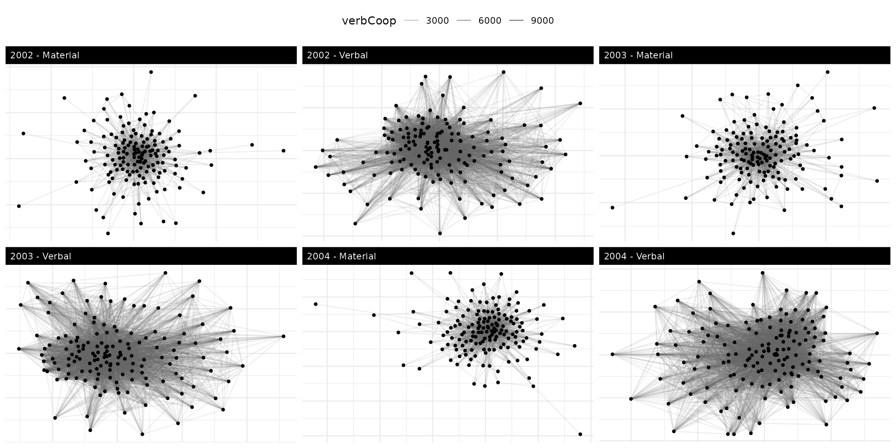

Multilayer Networks
Cassy Dorff and Shahryar Minhas
2026-10-21
Source:vignettes/multilayer_networks.Rmd
multilayer_networks.RmdThis vignette demonstrates how to analyze multilayer networks in
netify. Multilayer networks capture multiple types of
relationships between the same actors – a crucial feature for
understanding complex political systems where actors interact through
various channels simultaneously.
why multilayer networks matter for social science
Traditional network analysis forces us to choose: study trade OR conflict, cooperation OR competition, formal OR informal ties. But political reality is multilayered. States that trade may also fight. Legislators who cosponsor bills may attack each other on social media. Ignoring these multiple, simultaneous relationships leads to incomplete and potentially misleading conclusions.
Multilayer networks solve this problem by allowing us to analyze multiple relationship types together, revealing:
- Substitution effects: Do actors use one type of relationship instead of another?
- Complementarities: Do certain relationships tend to co-occur?
- Cross-layer association: Is position in one network related to behavior in another?
- Structural coupling: How do different relationship types move together?
quick start example
We’ll use data from the Integrated Crisis Early Warning System (ICEWS) throughout here.
library(netify)
library(dplyr)
library(tidyr)
library(ggplot2)
# load the icews event data
data(icews)
# create a simple multilayer network for 2010
icews_2010 <- icews[icews$year == 2010, ]
# verbal cooperation network
verbal_net <- netify(
icews_2010,
actor1 = "i", actor2 = "j",
sum_dyads = TRUE,
weight = "verbCoop"
)
# material cooperation network
material_net <- netify(
icews_2010,
actor1 = "i", actor2 = "j",
sum_dyads = TRUE,
weight = "matlCoop"
)
# combine into multilayer network
multi_net <- layer_netify(
list(verbal = verbal_net, material = material_net)
)
# quick visualization
plot(multi_net, add_text = FALSE)
What we see: Even this simple example shows a common measurement contrast in international relations event data. The verbal cooperation network (left) is dense with connections, while material cooperation (right) is sparse. In this sample, verbal cooperation events are much more common than material cooperation events.
building multilayer networks: a substantive example
Let’s build a more complete multilayer network to study international cooperation patterns during a critical period – 2002, shortly after 9/11 when cooperation dynamics were rapidly shifting.
Note: ICEWS event counts are directed (i sends X to j). The
cross-layer mixing, homophily, and regional-clustering analyses below
are naturally undirected, so we first sum the i→j and j→i counts for
each country pair and then build each layer with
symmetric = TRUE. Because the summed table lists each pair
once, nodal attributes are attached afterwards with
add_node_vars(). For directed analyses (e.g. who initiates
cooperation), use the raw data with symmetric = FALSE.
# focus on 2002 - post-9/11 cooperation dynamics
icews_2002 <- icews[icews$year == 2002, ]
# sum event counts over both directions of each country pair
icews_2002_undirected <- icews_2002 |>
mutate(
actor_a = pmin(i, j),
actor_b = pmax(i, j)
) |>
group_by(actor_a, actor_b) |>
summarize(
across(c(verbCoop, matlCoop, verbConf, matlConf), sum),
.groups = "drop"
)
# one row of attributes per country
actor_attributes <- icews_2002 |>
distinct(i, i_polity2, i_log_gdp, i_log_pop, i_region)
# create undirected networks with relevant attributes
verbal_coop_net <- netify(
icews_2002_undirected,
actor1 = "actor_a", actor2 = "actor_b",
symmetric = TRUE,
weight = "verbCoop",
dyad_vars = c("verbConf", "matlConf")
)
verbal_coop_net <- add_node_vars(
verbal_coop_net,
actor_attributes,
actor = "i"
)
material_coop_net <- netify(
icews_2002_undirected,
actor1 = "actor_a", actor2 = "actor_b",
symmetric = TRUE,
weight = "matlCoop",
dyad_vars = c("verbConf", "matlConf")
)
material_coop_net <- add_node_vars(
material_coop_net,
actor_attributes,
actor = "i"
)
# combine into multilayer network
multilayer_net <- layer_netify(
netlet_list = list(verbal_coop_net, material_coop_net),
layer_labels = c("Verbal", "Material")
)
multilayer_netvisualizing multilayer structures
basic visualization with interpretation
plot(multilayer_net,
add_text = FALSE,
node_size_by = "i_log_gdp",
node_color_by = "i_region"
) +
theme(
legend.position = "right"
)
#> Warning: Removed 6 rows containing missing values or values outside the scale range
#> (`geom_point()`).
This visualization reveals the fundamental asymmetry in international cooperation. The verbal layer shows the “diplomatic commons” – nearly all countries engage in diplomatic discourse. The material layer reveals the “cooperation core” – a much smaller set of countries that back words with resources. Node sizes (GDP) show that while large economies participate in both networks, material cooperation isn’t simply a function of capacity.
comparing network structures
# get structural comparison
struct_comp <- compare_networks(multilayer_net, what = "structure")
struct_comp
#> network num_actors density num_edges prop_edges_missing mean_edge_weight
#> 1 Verbal 152 0.409 4689 0 95.90
#> 2 Material 152 0.112 1288 0 6.95
#> sd_edge_weight median_edge_weight min_edge_weight max_edge_weight competition
#> 1 441.4 13 1 1.18e+04 0.039
#> 2 21.9 2 1 458 0.038
#> sd_of_actor_means transitivity mean_degree
#> 1 87.80 0.606 61.7
#> 2 1.71 0.311 16.9
#> metric value_net1 value_net2 absolute_change
#> num_actors num_actors 152 152.000 0
#> density density 0.409 0.112 -0.296
#> num_edges num_edges 4689 1288.000 -3401
#> prop_edges_missing prop_edges_missing 0 0.000 0
#> mean_edge_weight mean_edge_weight 95.9 6.950 -88.9
#> sd_edge_weight sd_edge_weight 441.4 21.900 -419.5
#> median_edge_weight median_edge_weight 13 2.000 -11
#> min_edge_weight min_edge_weight 1 1.000 0
#> max_edge_weight max_edge_weight 1.18e+04 458.000 -1.13e+04
#> competition competition 0.039 0.038 -0.001
#> sd_of_actor_means sd_of_actor_means 87.8 1.710 -86.1
#> transitivity transitivity 0.606 0.311 -0.295
#> mean_degree mean_degree 61.7 16.900 -44.8
#> percent_change
#> num_actors 0.00
#> density -72.50
#> num_edges -72.50
#> prop_edges_missing NA
#> mean_edge_weight -92.80
#> sd_edge_weight -95.00
#> median_edge_weight -84.60
#> min_edge_weight 0.00
#> max_edge_weight -96.10
#> competition -3.63
#> sd_of_actor_means -98.10
#> transitivity -48.70
#> mean_degree -72.50What these numbers mean:
- ~3.6x density difference: For roughly every material cooperation relationship, there are about three to four verbal ones
- ~3.6x degree difference: The average country verbally cooperates with about 62 others (mean degree ~61.7 in the symmetrized layer) but materially with only about 17 (mean degree ~16.9)
- Different clustering: Higher transitivity in verbal cooperation (0.606 vs 0.311) suggests diplomatic communities form more readily than material support clusters
This structural evidence is consistent with a “cheap talk” interpretation, but it should be read descriptively here: material cooperation follows different patterns than verbal diplomacy in this sample.
testing political science theories with multilayer networks
theory 1: democratic peace in different domains
Do democracies cooperate more with each other? And does this vary by cooperation type?
# test homophily across layers
multilayer_homophily <- homophily(
multilayer_net,
attribute = "i_polity2",
method = "correlation"
)
multilayer_homophily
#> net layer attribute method threshold_value homophily_correlation
#> 1 1 Verbal i_polity2 correlation 0 0.04162793
#> 2 1 Material i_polity2 correlation 0 0.01444973
#> mean_similarity_connected mean_similarity_unconnected similarity_difference
#> 1 -6.964294 -7.444698 0.4804043
#> 2 -7.016653 -7.279288 0.2626347
#> p_value ci_lower ci_upper n_connected_pairs n_unconnected_pairs
#> 1 0.000999001 0.02125211 0.05949489 4453 6573
#> 2 0.129870130 -0.00710257 0.03415305 1201 9825
#> n_missing n_pairs
#> 1 3 11026
#> 2 3 11026Democratic homophily registers in verbal cooperation (p < 0.001) but not material cooperation (p = 0.13). The verbal correlation is small in absolute terms (about 0.04) – at this magnitude the significance flag mostly reflects the large dyad count, so read it as weak evidence consistent with regime similarity in diplomatic channels rather than as a large association. Material support, by contrast, crosses regime boundaries more often, plausibly reflecting strategic rather than ideological considerations.
theory 2: regional security complexes
Do security concerns create regional cooperation clusters? Let’s examine regional patterns:
# regional mixing patterns
multilayer_mixing <- mixing_matrix(
multilayer_net,
attribute = "i_region"
)
multilayer_mixing$summary_stats
#> net layer attribute assortativity diagonal_proportion entropy modularity
#> 1 1 Verbal i_region 0.1558717 0.3365323 3.350767 0.122512
#> 2 1 Material i_region 0.2184878 0.3835404 3.346822 0.172344
#> n_groups total_ties
#> 1 7 4689
#> 2 7 1288Material cooperation shows stronger regional clustering (assortativity = 0.218) than verbal cooperation (0.156), consistent with regional security complex theory – when countries commit resources, they often prioritize neighbors. Verbal cooperation, being cheaper, is more globally distributed. One caveat: material events are substantially sparser than verbal ones, and sparse networks mechanically push assortativity up (fewer ties means each within-region tie carries more weight in the index). Read the gap directionally rather than as a precise magnitude estimate.
theory 3: conflict-cooperation dynamics
How does conflict in one domain relate to cooperation in another?
# analyze conflict-cooperation relationships
cross_layer_corr <- dyad_correlation(
multilayer_net,
dyad_vars = c("verbConf", "matlConf"),
edge_vars = c("Verbal", "Material")
)
# show key correlations
cross_layer_corr |>
select(dyad_var, edge_var, correlation, p_value) |>
filter(row_number() <= 4) # show first 4 unique combinations
#> dyad_var edge_var correlation p_value
#> 1 matlConf Material 0.3919681 0.000000e+00
#> 2 matlConf Verbal 0.3414675 2.775168e-311
#> 3 verbConf Material 0.3899573 0.000000e+00
#> 4 verbConf Verbal 0.5427055 0.000000e+00Verbal conflict and verbal cooperation are moderately correlated (r = 0.543) – countries that talk also argue. Material conflict shows lower correlations with both cooperation layers (~0.34-0.39), suggesting material interactions follow different dynamics than diplomatic ones.
identifying strategic actors
who bridges the cooperation gap?
Some countries specialize in material cooperation despite limited diplomatic engagement:
# find actor-level patterns
actor_stats <- summary_actor(multilayer_net)
# identify material cooperation specialists
centrality_comparison <- actor_stats |>
select(actor, layer, degree, betweenness, strength_sum) |>
pivot_wider(names_from = layer, values_from = c(degree, betweenness, strength_sum))
# compare percentile ranks of betweenness within each layer
material_specialists <- centrality_comparison |>
mutate(
verbal_pct = percent_rank(betweenness_Verbal),
material_pct = percent_rank(betweenness_Material),
rank_gap = material_pct - verbal_pct
) |>
filter(material_pct >= 0.75) |>
arrange(desc(rank_gap)) |>
head(5)
knitr::kable(
material_specialists[, c("actor", "verbal_pct", "material_pct", "rank_gap")],
col.names = c("Actor", "Verbal percentile", "Material percentile", "Rank gap"),
digits = 2
)| Actor | Verbal percentile | Material percentile | Rank gap |
|---|---|---|---|
| Colombia | 0 | 0.92 | 0.92 |
| Bosnia And Herzegovina | 0 | 0.91 | 0.91 |
| Germany | 0 | 0.89 | 0.89 |
| Georgia | 0 | 0.87 | 0.87 |
| Italy | 0 | 0.86 | 0.86 |
Ranking actors in the top quartile of material betweenness by the gap between their material and verbal percentiles surfaces Colombia, Bosnia and Herzegovina, Germany, Georgia, and Italy. All five have zero verbal betweenness – the shortest weighted paths of the diplomatic network run through hubs such as the United States, Russia, and China – yet each ranks above 85% of countries in material brokerage. Several fit the 2002 setting: Colombia was a major recipient of U.S. security assistance under Plan Colombia, Bosnia and Herzegovina hosted international peacekeeping and reconstruction missions, and Georgia began a U.S. military train-and-equip program. Germany and Italy have many ties in both layers, but their brokerage appears only in the material channel, plausibly reflecting contributions to multinational security and aid missions. Because most actors have zero verbal betweenness, the verbal percentile mainly separates actors with any diplomatic brokerage from those with none: Afghanistan, the second-ranked material broker overall, drops out because even its small verbal betweenness puts it in the top 15% of the verbal layer.
power dynamics across layers
# compare major powers
plot_actor_stats(
actor_stats,
across_actor = FALSE,
specific_actors = c("United States", "China", "Russian Federation", "Japan", "Germany")
)
#> Warning: Removed 21 rows containing missing values or values outside the scale range
#> (`position_quasirandom()`).
Power Analysis:
- The US dominates both layers, confirming hegemonic status
- Russia shows high verbal but lower material engagement – a diplomacy-heavy profile in these layers
- China (in 2002) shows moderate engagement, presaging its later rise
- Japan’s material cooperation exceeds its diplomatic footprint
- Germany balances both dimensions, reflecting EU leadership
understanding multiplexity: the architecture of international relations
Multiplexity analysis reveals which relationships involve multiple types of interaction – a key indicator of relationship depth and stability:
# analyze edge patterns
verbal_melt <- melt(verbal_coop_net, remove_zeros = FALSE, na.rm = TRUE)
material_melt <- melt(material_coop_net, remove_zeros = FALSE, na.rm = TRUE)
edge_comparison <- merge(
verbal_melt,
material_melt,
by = c("Var1", "Var2"),
suffixes = c("_verbal", "_material")
) |>
# keep each country pair once
filter(Var1 < Var2) |>
filter(value_verbal > 0 | value_material > 0)
# categorize relationships
multiplexity_summary <- edge_comparison |>
mutate(
relationship_type = case_when(
value_verbal > 0 & value_material > 0 ~ "Multiplex",
value_verbal > 0 ~ "Verbal Only",
value_material > 0 ~ "Material Only"
)
)
# summary and visualization
table(multiplexity_summary$relationship_type)
#>
#> Material Only Multiplex Verbal Only
#> 62 1226 3463
ggplot(multiplexity_summary, aes(x = relationship_type)) +
geom_bar() +
labs(
title = "The Multiplexity Gap in International Cooperation",
subtitle = "Most relationships remain purely verbal",
x = "Relationship Type",
y = "Number of Country Pairs"
) +
theme_bw() +
theme(
panel.border = element_blank(),
axis.ticks = element_blank(),
legend.position = "top"
)
Multiplexity Insights:
- Only 26% of relationships are multiplex (involving both verbal and material cooperation)
- 62 “material only” relationships deserve attention – these might represent covert cooperation or technical assistance below the diplomatic radar
- The 1,226 multiplex relationships form the stable core of international cooperation
who has multiplex relationships?
# identify multiplex relationships
multiplex_pairs <- multiplexity_summary |>
filter(relationship_type == "Multiplex") |>
mutate(total_coop = value_verbal + value_material) |>
arrange(desc(total_coop)) |>
head(10)
knitr::kable(
multiplex_pairs[, c("Var1", "Var2", "value_verbal", "value_material")],
col.names = c("Country 1", "Country 2", "Verbal cooperation", "Material cooperation"),
row.names = FALSE
)| Country 1 | Country 2 | Verbal cooperation | Material cooperation |
|---|---|---|---|
| Russian Federation | United States | 11763 | 120 |
| China | United States | 8981 | 35 |
| Japan | United States | 8432 | 78 |
| Israel | United States | 8017 | 91 |
| Japan | Korea, Democratic People’s Republic Of | 7734 | 83 |
| Korea, Republic Of | United States | 5793 | 81 |
| Pakistan | United States | 5693 | 165 |
| Korea, Democratic People’s Republic Of | Korea, Republic Of | 5312 | 98 |
| China | Japan | 5208 | 93 |
| Japan | Russian Federation | 5155 | 21 |
US-Russia tops the list despite tensions, showing how former adversaries maintain multiple channels. US relationships with allies (Israel, Japan) and strategic competitors (China) also show high multiplexity, indicating relationship importance transcends simple friend/foe categories.
advanced analysis: layer dependencies
how do layers relate?
# compare all layer pairs
layer_comparison <- compare_networks(multilayer_net, what = "edges", method = "all")
layer_comparison
#> comparison correlation jaccard hamming qap_correlation qap_pvalue
#> 1 Verbal vs Material 0.575 0.258 0.307 0.575 2e-04
#> spectral
#> 1 1.8e+05
#> Verbal Material
#> Verbal 1.0000000 0.5749909
#> Material 0.5749909 1.0000000
#> Verbal Material
#> Verbal NA 0.00019996
#> Material 0.00019996 NA
#> attr(,"n_perm")
#> [1] 5000
#> Verbal Material
#> Verbal NA 5000
#> Material 5000 NA
#> attr(,"n_perm")
#> [1] 5000Key Metrics Explained:
- Correlation (0.575): Moderate positive relationship – dyads with more verbal cooperation also tend to have more material cooperation
- Jaccard (0.258): Only 26% edge overlap – most relationships exist in just one layer
- Hamming (0.307): About 31% of possible edges differ between layers
- QAP test (p < 0.001): The observed correlation is larger than expected under the permutation reference distribution
For downstream filtering and plotting,
compare_networks() also exposes a tidy
$comparisons data frame with one row per (pair, metric).
This is the layout you usually want when you have more than two
networks; the project-site tracking-changes article has a fuller
example.
knitr::kable(
layer_comparison$comparisons,
caption = "Tidy per-pair comparison frame",
digits = 3, align = "c"
)| net_i | net_j | metric | value | p_value |
|---|---|---|---|---|
| Verbal | Material | correlation | 0.575 | NA |
| Verbal | Material | jaccard | 0.258 | NA |
| Verbal | Material | hamming | 0.307 | NA |
| Verbal | Material | qap_correlation | 0.575 | 0 |
| Verbal | Material | spectral | 180193.320 | NA |
visualizing layer relationships
# cross-layer scatter
ggplot(edge_comparison, aes(x = log1p(value_verbal), y = log1p(value_material))) +
geom_point(alpha = 0.2) +
geom_smooth(method = "lm", se = TRUE) +
geom_density_2d(alpha = 0.5) +
labs(
title = "The Verbal-Material Cooperation Gap",
subtitle = "Most relationships cluster along axes, not diagonal",
x = "Log(Verbal Cooperation + 1)",
y = "Log(Material Cooperation + 1)"
) +
theme_bw() +
theme(
panel.border = element_blank(),
axis.ticks = element_blank(),
legend.position = "top"
) +
annotate("text", x = 7, y = 1, label = "Talk without action", fontface = "italic") +
annotate("text", x = 1, y = 5, label = "Quiet support", fontface = "italic") +
annotate("text", x = 6, y = 5, label = "Full cooperation", fontface = "italic")
temporal dynamics in multilayer networks
Understanding how different layers evolve over time reveals changing cooperation dynamics:
# create temporal multilayer network
years_example <- c(2002, 2003, 2004)
icews_subset <- icews[icews$year %in% years_example, ]
verbal_temporal <- netify(
icews_subset,
actor1 = "i", actor2 = "j",
time = "year",
symmetric = TRUE,
sum_dyads = TRUE,
weight = "verbCoop"
)
material_temporal <- netify(
icews_subset,
actor1 = "i", actor2 = "j",
time = "year",
symmetric = TRUE,
sum_dyads = TRUE,
weight = "matlCoop"
)
temporal_multilayer <- layer_netify(
list(verbal_temporal, material_temporal),
layer_labels = c("Verbal", "Material")
)
# visualize evolution
plot(temporal_multilayer,
add_text = FALSE,
facet_type = "wrap",
facet_ncol = 3
)
The early-2000s period shows network evolution. Both layers change from 2002 to 2004, but material cooperation grows more selectively, suggesting crisis-driven coalition building.
practical recommendations
when to use multilayer vs. separate analysis
Use multilayer when:
- Relationships are theoretically related to each other
- You suspect substitution or complementarity effects
- Actor positions might differ across relationship types
- You need to identify relationship depth through multiplexity
Use separate analysis when:
- Relationships are theoretically independent
- Different actor sets across layers
- Computational constraints exist
- Initial exploration before multilayer modeling
choosing analysis methods
-
For regime type patterns: Use
homophily()with “correlation” method for continuous variables like polity scores -
For regional/categorical patterns: Use
mixing_matrix()to see full interaction patterns -
For relationship strength: Use
compare_networks()withwhat="edges"andmethod="all"to compare edge patterns -
For individual actors: Use
summary_actor()and examine layer-specific centralities
tl;dr
Multilayer network analysis in netify reveals how
different types of political relationships interact, overlap, and
diverge. By moving beyond single-layer analysis, we can:
- Test more nuanced theories about international behavior
- Identify actors with specialized roles across different domains
- Understand the architecture of complex political systems
- Track how relationship portfolios evolve over time
- Keep layer-specific interpretations tied to the measurement scale and sparsity of each layer
references
Dorff, C., Gallop, M., & Minhas, S. (2020). Networks of Violence: Predicting Conflict in Nigeria. The Journal of Politics, 82(2), 476–493. https://doi.org/10.1086/706459
Minhas, S., Dorff, C., Gallop, M., Foster, M., Liu, H., Tellez, J., & Ward, M. D. (2022). Taking dyads seriously. Political Science Research and Methods, 10(4), 703–721. https://doi.org/10.1017/psrm.2021.56
Minhas, S., Hoff, P. D., & Ward, M. D. (2016). A new approach to analyzing coevolving longitudinal networks in international relations. Journal of Peace Research, 53(3), 491-505. https://doi.org/10.1177/0022343316630783